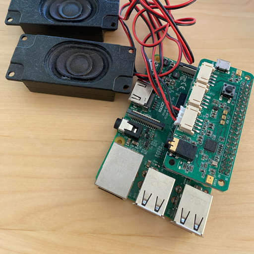

In this project, I developed a conversational chatbot using DuerOS Core, a voice chip provided by Baidu. The project combines the DuerOS Core with a Raspberry Pi, utilizing the DuerOS SDK to achieve an intelligent conversation process.
 See DetailsProject Details:
- Hardware Integration: Combined DuerOS Core chip with Raspberry Pi, providing the hardware foundation for voice interaction.
- Networking: Connected Raspberry Pi to the internet to obtain necessary voice resource SDK.
- SDK Integration: Installed and configured the DuerOS SDK on Raspberry Pi, using Python to call the SDK API for voice recognition and semantic understanding.
- Intelligent Dialogue System Development: Developed natural language processing modules to handle user voice input and extract useful information.
- Testing and Optimization: Conducted multiple rounds of testing to ensure the stability and accuracy of the dialogue system, optimizing dialogue logic and voice processing algorithms to improve system response speed and user experience.
Project Highlights:
- Successfully developed an intelligent dialogue robot capable of smooth voice interaction with users.
- Implemented various functions including weather query, news broadcast, music playback, greatly enhancing user convenience.
- Demonstrated the powerful functions of DuerOS Core chip and the programmability of Raspberry Pi, showing broad application prospects.
This project showcases my comprehensive skills in hardware integration, networking, SDK integration, and natural language processing, effectively creating a smart voice interaction system.